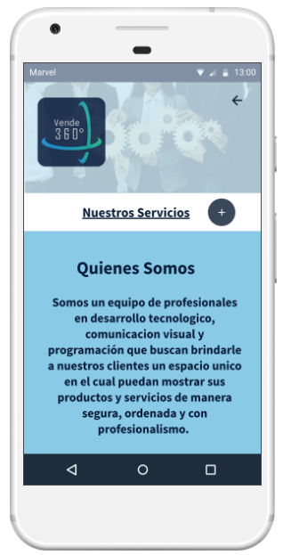

Diseño de la Interfaz Gráfica
El diseño de la Interfaz Gráfica (UI, por sus siglas en inglés) en aplicaciones móviles se refiere a la creación y disposición visual de los elementos que los usuarios ven y con los que interactúan en la pantalla de sus dispositivos móviles. Es esencial en el diseño de aplicaciones, ya que incluye la usabilidad, la experiencia del usuario y la estética general de la aplicación. Algunos elementos claves a tener en cuenta son:

Interfaz de Usuario:
Fondo y Tema: Permite a los usuario seleccionar un tema favorito, ya sea un tema oscuro o claro, ademas de ofrecer opciones de fondo personalizado para los entornos virtuales.
Navegación Intuitiva
Menús: Un menú de navegación simple en la parte inferior o lateral de la pantalla con iconos claros, asi como, un botón de inicio que lleve a una página principal con recomendaciones y novedades.
Gestos Táctiles: Deslizar hacia izquierda o derecha para cambiar entre categorías o entornos. También se puede pellizar para hacer zoom en imágenes o videos en 360 grados.
Visualización en 360 grados:
Controles: Botones de flecha o gestos para rotar la vista en 360 grados. Ademas de botón de "Centrar" para volver a la posición inicia.
Indicadores Visuales: Puntos de interés destacados con información emergente. Así como una barra de progreso que muestra el progreso en los entornos virtuales.
Integración con redes sociales:
Compartir: Botones de compartir en la parte inferior de cada entorno virtual. Así como la posibilidad de compartir imágenes o videos en redes sociales con un solo clic.
Conexión Social: Permitir a los usuarios vincular sus perfiles de redes sociales para ver entornos compartidos por amigos, ademas de una sección de actividad que muestra las interacciones sociales del usuario.
Sistema de Búsqueda Eficiente:
Barra de Búsquedas: Una barra de búsqueda en la parte superior con sugerencias automáticas, con filtros de búsqueda por categoría, fecha, popularidad, etc.
Resultados: Miniaturas de resultados con información básica y botones de acceso rápido.
Compatibilidad Multiplataforma:
Pruebas: Pruebas exhaustivas en dispositivos iOS y Android, tabletas y teléfonos de diferentes tamaños. Para garantizar la compatibilidad con los principales navegadores móviles.
Seguridad y Privacidad:
Inicio de Sesión: Se debe implementar el proceso de inicio de sesión seguro con autenticación de dos factores opcionales. Además de opciones claras de privacidad, con cofiguraciones predeterminadas respetuosas de la privacidad.
Rendimiento Óptimo:
Optimización de Contenido: Comprimir imagenes y videos para una carga rápida, ademas de utilizar tecnicas de carga progresiva para mostrar contenido mientras se carga.
Cacheo Inteligente: Almacenar en Cáche datos y entornos previamente visitados para mejorar la velocidad de la carga.
Mantenibilidad:
Arquitectura Modular: Diseñar la aplicación en módulos independientes para facilitar las actualizaciones. Así como mantener una documentación clara para futuros desarrolladores.
Usabilidad:
Pruebas Continuas: Realizar pruebas de usabilidad periódicas y recopilar comentarios. Ademas de implementar mejoras basadas en la retroalimentación del usuario.